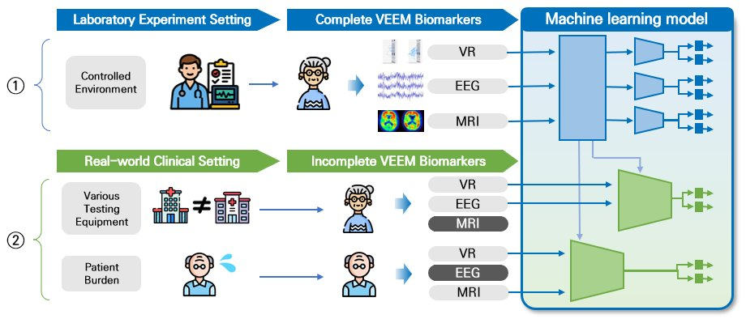

01The real-world problem현실의 문제
In the lab we collect VR, EP, EEG and MRI from everyone. In a real clinic, equipment and patient burden mean some tests are always missing. Training a separate model for every combination wastes scarce data and gives inconsistent decisions; imputing missing values invents data.
실험실에서는 모두에게서 VR, EP, EEG, MRI를 수집하지만, 실제 임상에서는 장비와 환자 부담 때문에 일부 검사가 늘 빠집니다. 조합마다 모델을 따로 학습하면 적은 데이터가 더 쪼개지고 판단 기준도 제각각이 되며, 결측값을 채워 넣으면 없는 데이터를 만들어내게 돼요.

02Approach: scandent trees방법: Scandent tree
- Support treeSupport treeTrain a decision tree on samples that have every modality; it defines how the feature space is split.모든 모달리티가 있는 샘플로 결정 트리를 학습해 feature 공간을 나누는 기준을 정해요.
- Scandent treesScandent treeFor each partial combination (e.g. VR + EEG), train a tree that imitates the support tree's splits using only the available features.VR+EEG처럼 일부 모달리티만 있는 조합마다, 가진 feature만으로 support tree의 분할을 최대한 따라 하도록 트리를 학습해요.
- Inference추론Leaves are labeled by the complete-data samples that land in them; trees are combined into a forest.잎 노드에 모인 완전 데이터 샘플의 라벨로 판정하고, 트리들을 앙상블(forest)로 묶어요.
03Results결과
59participants with VEEM dataVEEM 데이터 참여자
91.67%accuracy, full VEEM model전체 VEEM 모델 정확도
100%specificity특이도
2ndplace, ACM CHI 2025 SRCACM CHI 2025 SRC 2위
04My contribution나의 기여
- Sole author: problem framing, method, analysis and presentation at ACM CHI 2025 in Yokohama.단독 저자: 문제 정의, 방법, 분석, ACM CHI 2025(요코하마) 발표까지 전부 수행했어요.